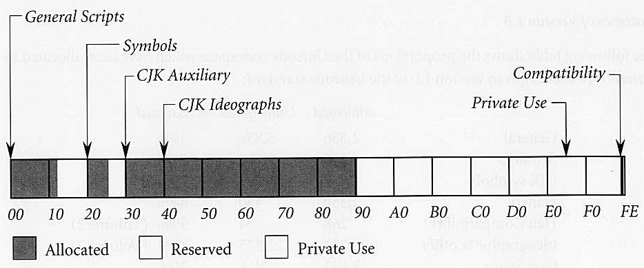

I work at Mozilla Research on Servo, a browser engine written in Rust.
I also contribute a little bit to Rust.
1.0 released on Friday!
www.rust-lang.org
When you open a file in Rust, the representation of the file name in memory is a bit unusual.
Let’s talk about how and why!
But first we need some background on text in computers.
Character encodings
The nice thing about standards is that you have so many to choose from.
ISO-8859-15
Windows-1251
GBK
EUC-JP
Shift-JIS
EUC-KR
…
CPUs mostly know about numbers, not about text.
So we need conventions to represent text with numbers.
Of course, there is more than one way to do it.
In the early days, each encoding only covered cover some writing systems: you couldn’t have e.g. Greek and Hebrew in the same document.
Standards
xkcd.com
So what can we do about this?
Make a new one that will support everything, of course!
That’s how Unicode came to be.
Unicode 1.0.0 − 1989
16 bits → Up to 65 536 characters*

With over 30,000 unallocated character positions,
the Unicode character encoding provides
sufficient space for forseeable future expansion.
(* Let’s ignore code points vs grapheme clusters vs glyphs…)
Even then there was concern that 65k wouldn’t be enough, but the Unicode Committee really wanted to make it 16 bits.
They argued that it would be enough in page 2 of the introduction chapter.
Guess what happened next…
Unicode/UCS-2 adoption
Windows NT
Java
JavaScript
Qt
(.NET)
(OS X)
Many systems adopted Unicode with 2 bytes/character.
That’s what Unicode was at the time.
This encoding became later known as UCS-2.
Up to 31 bits
Meanwhile, some people did not like UCS-2 and came up with UTF-8.
It’s variable-width: 1 character is encoded with 1 to 6 bytes.
Only these byte sequences are well-formed, errors have to be dealt with somehow.
UTF-16 − 1996 (Unicode 2.0.0)
Walks like UCS-2, swims like UCS-2, quacks like UCS-2
Surrogates not in a pair: ¯\_(ツ)_/¯
65k characters really was not enough! Who knew‽
No supplementary characters assigned until Unicode 3.1.0 in 2001:
no incentive for UCS-2 systems to really implement UTF-16 and deal with surrogates.
As a result, UTF-16 well-formedness is rarely enforced.
Also in Unicode 2.0.0
Abstract characters:
U+0000 ~ U+D7FF
U+E000 ~ U+10FFFF
(exclude surrogates)
Multiple encodings: UTF-8, UTF-16, UTF-32, …
Artificially restricted
E.g. 0xED 0xA0 0x80 → U+D800 is ill-formed in UTF-8
Mapping characters to numbers is separated from encoding these numbers in computers memory.
Other encodings are artificially restricted to match the set of value supported by UTF-16.
Rust strings
UTF-8 all the things!
pub struct String {
vec: Vec<u8>,
}
API enforces UTF-8 well-formedness
Let’s go back to Rust!
This is the actual definition of String in the standard library.
It’s (well-formed) UTF-8, the underlying vector of bytes is private.
Great for doing international text correctly, but the outside world isn’t always so nice.
OS strings
File names
Environment variables
Command line parameters
Unix: arbitrary bytes, often UTF-8
Windows: supposedly UTF-16, not always well-formed.
can i haz cross-platform?
Strings in low-level operating system APIs are different in different platforms. Also not necessarily Unicode.
We want the Rust standard library to abstract this away to let you write cross-platform easily.
So there is a separate string type.
On Windows, not potentially ill-formed UTF-16.
We want something closer to UTF-8 for cheaper conversions from/to String.
Only problem is unpaired surrogates, ill-formed in UTF-8.
What if we did it anyway?
WTF-8
UTF-8 superset with surrogates, but only if not in pairs
Same possible values as potentially ill-formed UTF-16
(and special concatenation)
Prior art: Scheme 48, Racket
Specification: simonsapin.github.io/wtf-8
It’s not UTF-8, so it needs another name. This seems appropriate, it’s a horrible hack that I wish didn’t need to exist.
Concatenation needs to replaced newly-formed surrogate pairs with a single supplementary character (encoded as 4 bytes).
This existed before, but I wrote a spec that properly defines everything.
 1.0 released on Friday!
1.0 released on Friday!